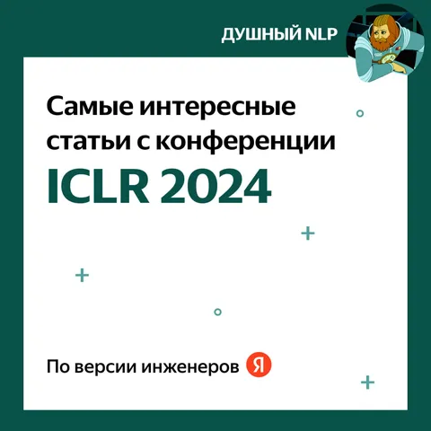
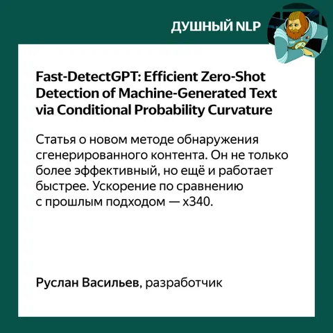
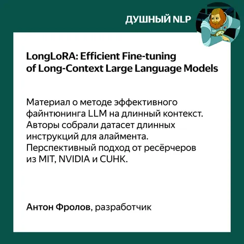
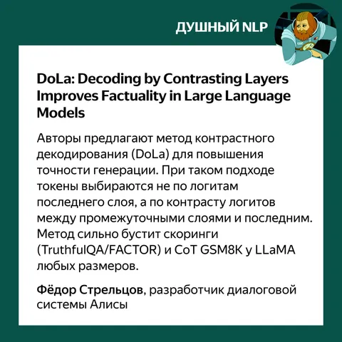
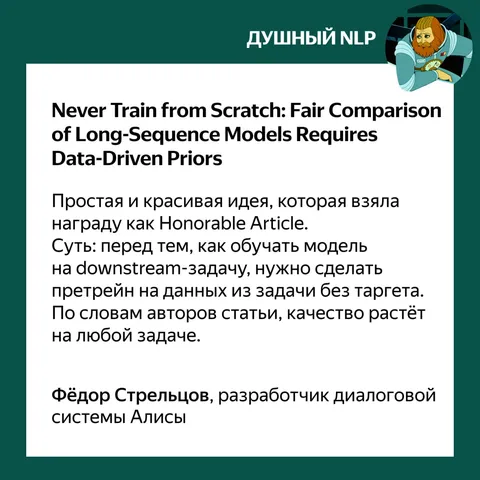
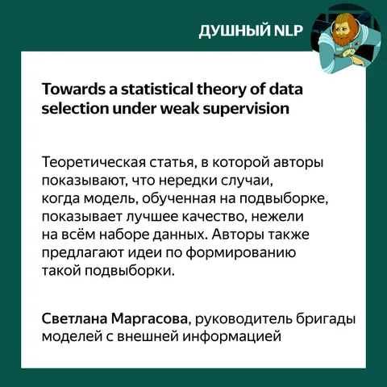
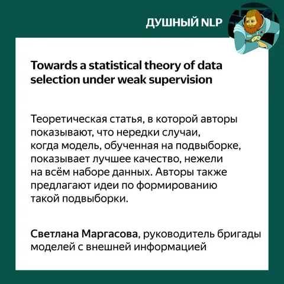
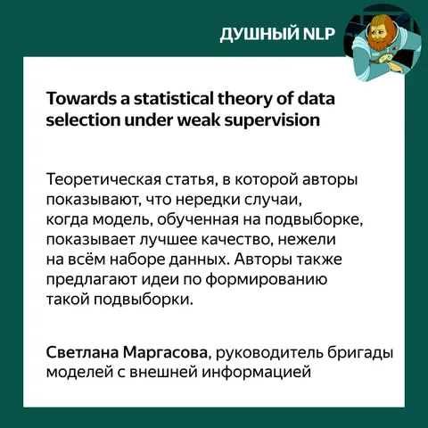

В начале мая прошла ICLR 2024 — конференция, которая собирает специалистов в области машинного обучения со всего мира. Мы побывали на мероприятии и теперь в карточках рассказываем о статьях, которые запомнились больше всего.
А вот ссылки на все тексты:
1. Fast-DetectGPT: Efficient Zero-Shot Detection of Machine-Generated Text via Conditional Probability Curvature
2. LongLoRA: Efficient Fine-tuning of Long-Context Large Language Models
3. DoLa: Decoding by Contrasting Layers Improves Factuality in Large Language Models
4. Never Train from Scratch: Fair Comparison of Long-Sequence Models Requires Data-Driven Priors
5. ToolLLM: Facilitating Large Language Models to Master 16000+ Real-world APIs
6. Towards a statistical theory of data selection under weak supervision
Рассказывайте в комментариях, какие статьи понравились вам, и делитесь впечатлениями!
Душный NLP
 

